Forward Chess User Guide
Welcome to Forward Chess! The app is an advanced book reader which can display chess moves in the text on a board. It works only on not jailbroken devices with books you buy in the store.
The app is designed for intuitive navigation. There are two main tabs in the app: My Books and Store.
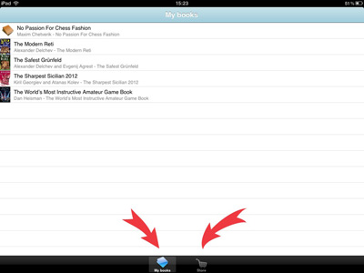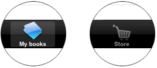
My Books
To open a book, simply tap the title you want to read. Sliding left and right provides navigation between adjacent chapters. To skip to a chapter in a different part of the book, simply tap TOC.
| 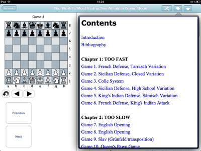 | 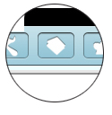 |
You will get to choose the chapter from the table of contents.
To navigate within a chapter, simply slide up and down. All moves shown in blue can be tapped – doing so will bring up the big chess board. Depending on how you are using your device, the board will be either on the left or on the top; you can use the app in both portrait and landscape mode.
The icons below the big board provides you with basic “VCR” navigation features – next move, previous move, flip the board. If, for some reason, you don’t need the board you can take it off by tapping the Board button:
| 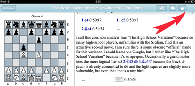 | 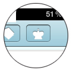 |
Forward Chess is more than just a book reader. You can make any legal moves on the board if you wish to explore a variation not shown in the text.
In addition to the VCR-like buttons Forward and Backward, you can move through the game and variations using the large Previous and Next buttons – the effect is the same, but it is much easier to use the large buttons, especially for moving through long lines.
The first button in the top right corner:
| 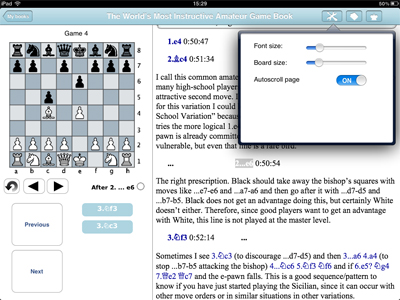 | 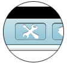 |
provides the user with a few additional options. All three options apply to the text of the book, not the big board. Here you can change the font size, change the board size (again, this is about the diagrams in the text, not the big board) and manage the autoscroll. Autoscroll is the feature that lets you choose whether or not you want the text to follow the lines you are examining on the big board.
To get back to the list of books, simply tap the My Books button in the upper left side of the screen.
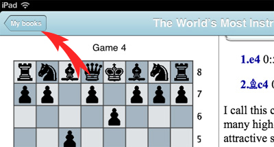
If your feel that the My Books list is too cluttered you can always temporarily remove one or more books there. Simply select the title you want taken out and slide to the left. You can delete it by pressing the red button Delete on the right.
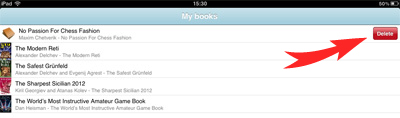
Whatever you delete is not gone forever! You can always bring it back by clicking Restore Transactions in the upper right corner of the Store.
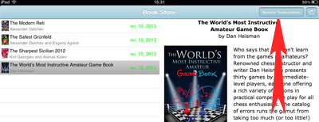
Store
The list of available titles shows all books you can get from Forward Chess. Tapping any of them will bring up the book description. If you are in landscape mode, the description will appear on the right hand side. In portrait mode it comes up as a new window.
| 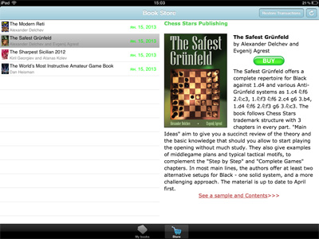 | |
Last but not least, we are sure you know what the BUY button is for!
Troubleshooting
If the text screen does not resize correctly when you turn the tablet from portrait to landscape mode, reload the page by sliding right and left.
If the text in the Contents window does not fit in, tap again the Contents icon to reload the page.
We are eager to make the Forward Chess experience a great one for all users. This is, and perhaps always will be, a work in progress. Please send your comments and suggestions to info@forwardchess.com.
We love getting e-mail!
Enjoy the app!
Forward Chess team